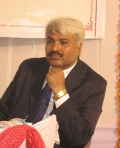

Welcome to icon3c2015
Shri
Guru Gobind Singhji
Institute of Engineering and Technology (SGGSIE&T), Nanded,
Maharashtra, India, proudly announces first International Conference on Computing,
Communication and Control (ICon3C), during 18 to 20 December, 2015.
(ICon3C)
2015 will be held in Nanded - 431606, Maharashtra
State, India, which is One of the oldest and historic
cities in the Marathwada region of Maharashtra. It is situated on the north bank of the Godavari River. It is famous for Sikh
Gurudwaras. Nanded is a
town of great antiquity. It is said that during the Puranic
days, Pandavas traveled through Nanded
district. Nandas ruled over Nanded
through generations. In 1708, Guru
Gobind Singh the
tenth spiritual leader of the Sikhs came over to Nanded,
his permanent abode. It was he who preached amongst the Sikhs that there need
not be any spiritual leader for them and they should take Granth Sahib as their leader. A monument has been
constructed at the place where he breathed his last. A Gurudwara has also been constructed there. It is
known as Shri
Hazur Abchalnagar Sachkhand Gurudwara. It is
built by Maharaja
Ranjit Singhji, the ruler
of Punjab from 1830 to 1839 A.D. which is one of
the five High seats of Authority
of the Sikhs. Since Shri Guru Gobind Singhji took
his last breath in this place. The Gurudwara has
wonderfully preserved the mortal remains of the 10th Guru along with various other weapons.
Nanded fort
a beautiful location situated 4 km away from the Nanded
Railway Station. Sumptuous Godavari River encloses the fort on three sides. The
fort is blessed with a excellent garden and water works enhancing its natural
beauty.
Nanded Railway Station is
known as Huzur Sahib Nanded.
Huzur Sahib Nanded is part
of the South Central Railway network and is connected to most major
Indian cities. It is served by 23 pairs of trains every day with daily (or
multiple daily) connections to Mumbai,
Nagpur, Pune, Amravati, Aurangabad and other major cities
in Maharashtra.
Beyond
Maharashtra, Nanded is connected by daily (or
multiple daily) trains to New Delhi,
Hyderabad, Bangalore, Amritsar,
Bhopal, Jhansi, Gwalior, Agra, Faridabad, Ambala, Ludhiana and Jalandhar, as
well as to towns like Yadgir,
Bidar and Raichur in Karnataka, Anantapur in Andhra Pradesh and Nizamabad in Telangana.
Weekly
or multiple weekly train services connect Nanded to
other major cities such as Kolkata, Chennai, Patna, Jaipur, Sriganganagar, Ajmer,
Kota, Indore, Jabalpur,
Vishakhapatnam, Vijayawada, Tirupati, Raipur, Bilaspur, Sambalpur, Rourkela, Madurai, Rameshwaram, Ahmedabad, Vadodara, Surat, Rajkot, Jamnagar, Varanasi, Allahabad, Dhanbad and several other towns along the way.
We look forward to seeing you
in Nanded for this exciting event!

General
Co-Chairs